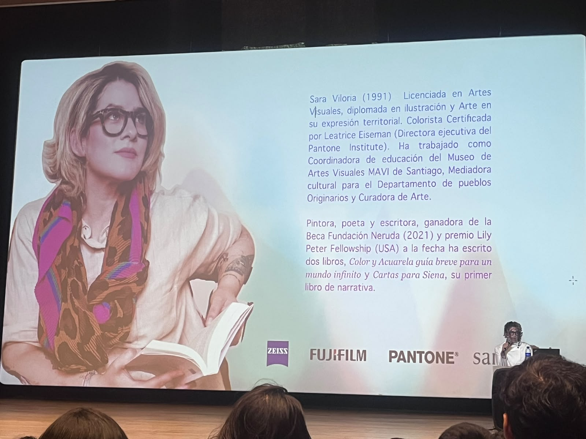
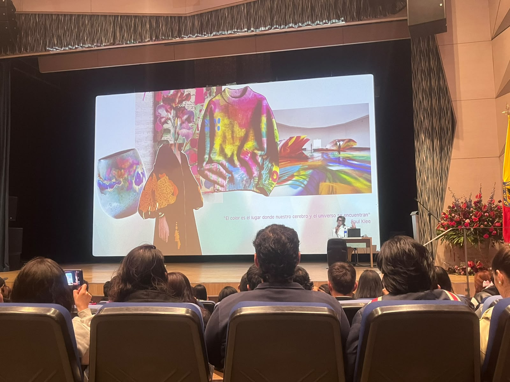
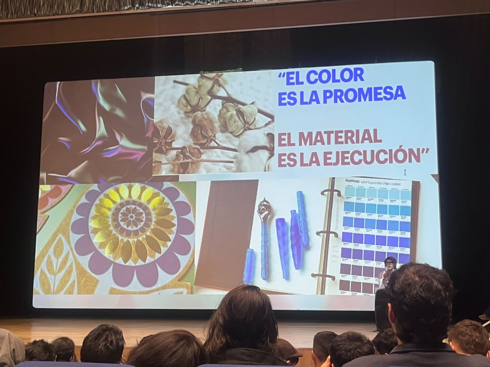
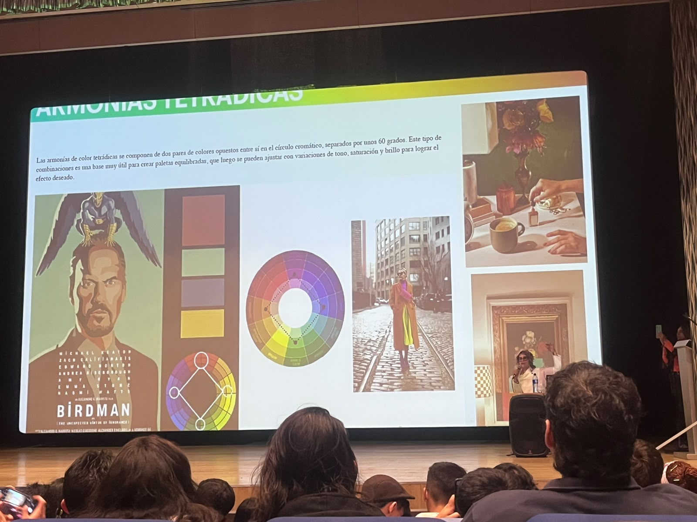
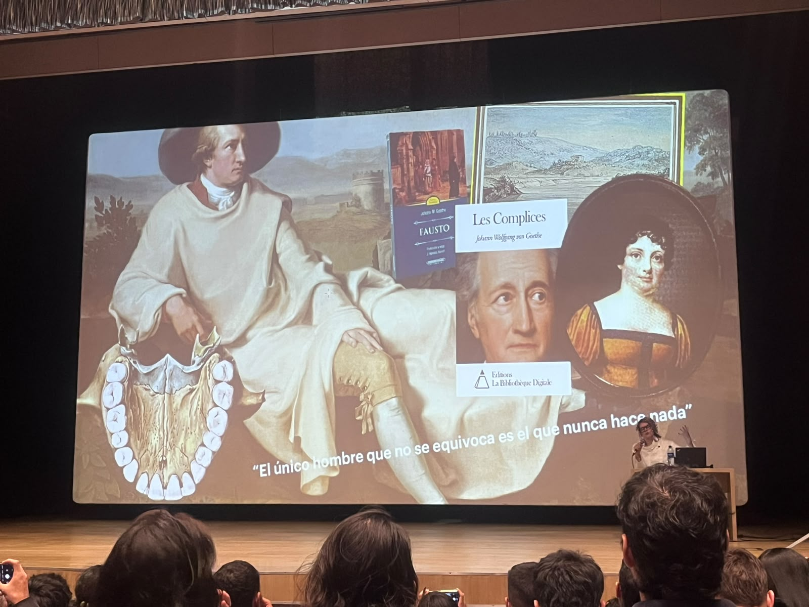
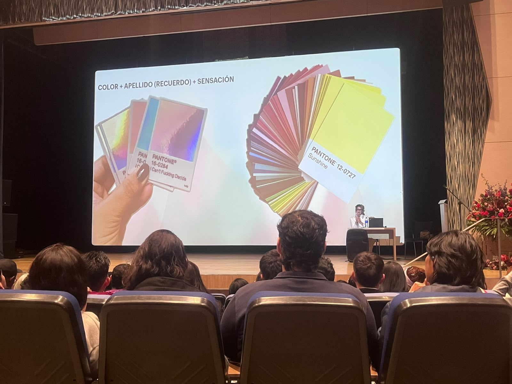
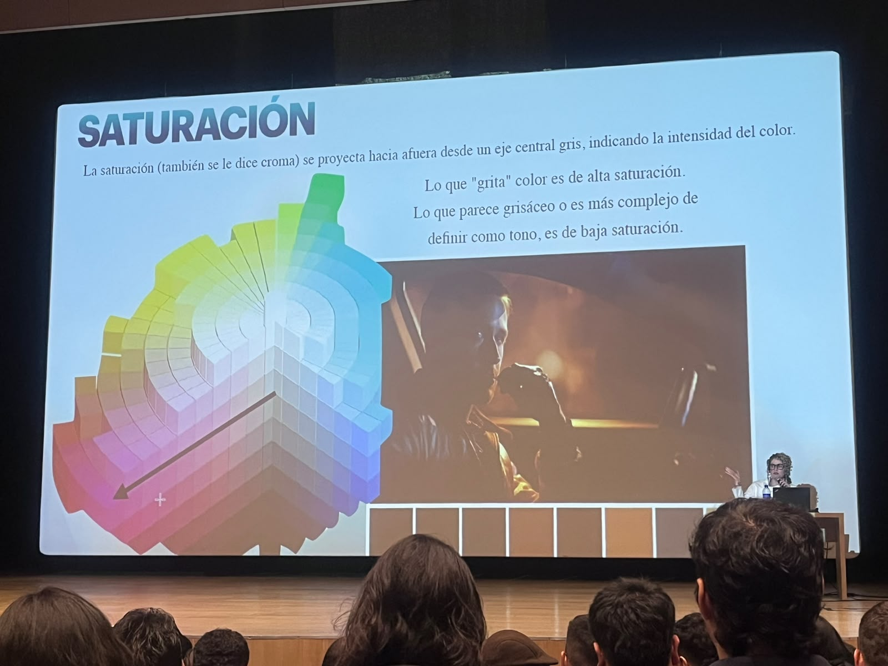
Bienvenidos!
Esta página fue creada con el fin de mostrar mi experiencia en la conferencia de colores en la universidad ECCI.
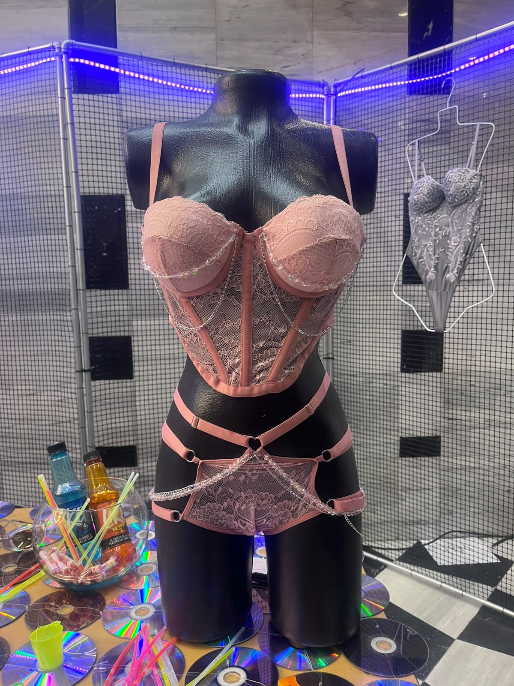
Mi experiencia en la conferencia y evento de moda en la Universidad ECCI fue mágica; es una vivencia que repetiría siempre. Lo que más me llevé de la conferencia fue la reflexión de que debemos aprender a vivir la vida con colores. Estamos tan acostumbrados a verlos que, en ocasiones, dejamos de percibirlos realmente. Después de mucho tiempo, me sentí consciente de los colores que me rodeaban, de los que vestía y de los que utilizaban la mayoría de las personas del programa ADSO. Fue un momento que me permitió valorar la belleza de los colores presentes en mi entorno.
Una de las experiencias más significativas ocurrió mientras Sara Viloria daba su conferencia: varios estudiantes de la universidad pasaban frente a mí, y eso me hizo observar con atención las prendas que llevaban. Pensé que el estilo “Pinterest” se ha vuelto tan común que ya resulta monótono. Aunque no considero que sea la mejor al vestirme, estaba librando una batalla interna al sentirme “básica”. Ver esos atuendos, que antes me parecían inspiradores en fotos, ahora me resultaban aburridos, lo que me llevó a replantear un cambio en mi clóset.
La relación que encontré con el desarrollo de software es que solemos trabajar con colores neutros —negro, blanco, azul oscuro— y rara vez nos atrevemos a dar un “pum” de color. Incluso cuando la empresa de un cliente maneja tonos llamativos, tendemos a suavizarlos. Eso me sucedía: mi empresa utiliza colores pasteles y suaves, pero yo los estaba llevando hacia tonalidades oscuras. Esta experiencia fue, entonces, una invitación a atrevernos a incorporar colores en nuestro trabajo y en nuestra vida cotidiana.
Normalmente, cuando una persona que no estudia moda, arte o pintura, o que está poco familiarizada con el mundo de los colores, piensa en Pantone, suele creer que se trata únicamente de un conjunto de fichas con tonalidades a las que se les asigna un nombre. Eso mismo pensaba yo que era Pantone, hasta que me di a la tarea de investigar y, después de escuchar la conferencia, comprendí que estaba equivocada: Pantone es mucho más que eso.
Pantone no solo organiza colores, también inspira a través de ellos. Cada año, cuando anuncian el Color del Año, se convierte en una invitación a conocerlo, convivir con él y sentirlo. Además, como lo señaló nuestra ponente Sara Viloria, cada color trae consigo recuerdos, sensaciones y sentimientos, lo que demuestra que su importancia va más allá de lo visual: conecta directamente con nuestras emociones y experiencias.
| Inglés | Español | Definición |
|---|---|---|
| Prussian blue | Azul de Prusia | Un tono profundo de azul con matices verdosos usado en pintura y diseño. |
| Caput Mortum | Caput Mortum | Un pigmento oscuro morado intenso obtenido históricamente del humo de alquitrán. |
| CMF | CMF | Color, Material y Acabado; concepto clave en diseño de productos y moda. |
| Hue | Tono | La familia básica de color, como rojo, azul o amarillo. |
| Saturation | Saturación | La intensidad o viveza del color. |
| Value | Valor | La claridad u oscuridad de un color. |
| Complementary | Complementario | Colores opuestos en la rueda de color que crean contraste vibrante. |
| Analogous | Análogo | Colores vecinos en la rueda de color que armonizan suavemente. |
| Monochromatic | Monocromático | Una paleta basada en variaciones de un solo color. |
| Achromatic | Acromático | Colores sin tono: negro, blanco y grises. |
| Temperature | Temperatura | La sensación cálida o fría que transmite un color. |
| Tint | Tinte | Un color mezclado con blanco para hacerlo más claro. |
| Shade | Sombra | Un color mezclado con negro para hacerlo más oscuro. |
| Tone | Tono | Un color mezclado con gris para reducir su intensidad. |
| Pantone | Pantone | Un sistema estandarizado de colores usado en moda y diseño para identificar tonos precisos. |
En eventos de moda y color se debe priorizar la selección de materiales responsables, el uso de iluminación eficiente y el manejo adecuado de residuos, creando experiencias inclusivas para todas las personas.
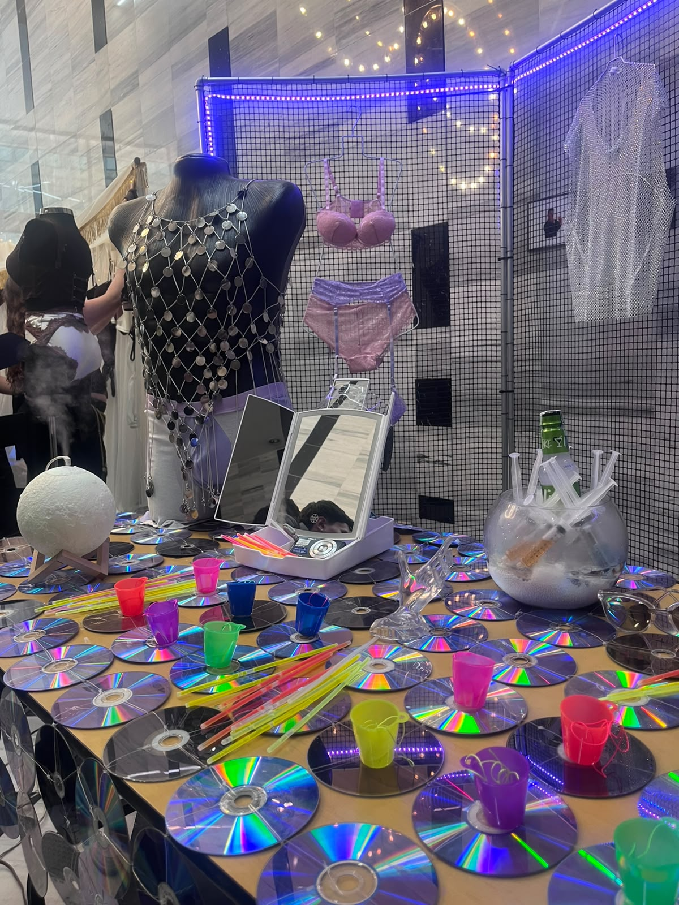
Me hizo sentir dentro de un rave, ya que el stand tenia música de este estilo y las personas dueñas de él estaban en la misma vibe.
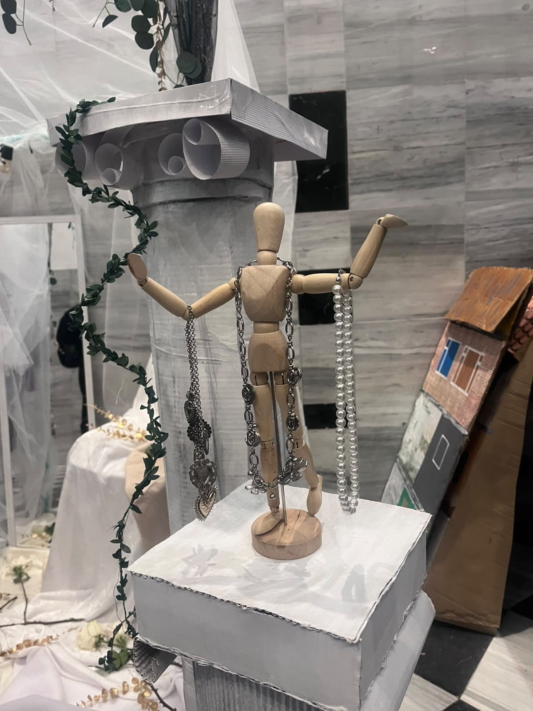
Este foto es una de mis favoritas, por la forma tan especial y unica en la que acomodaron sus joyas y claro por como fue tomada.
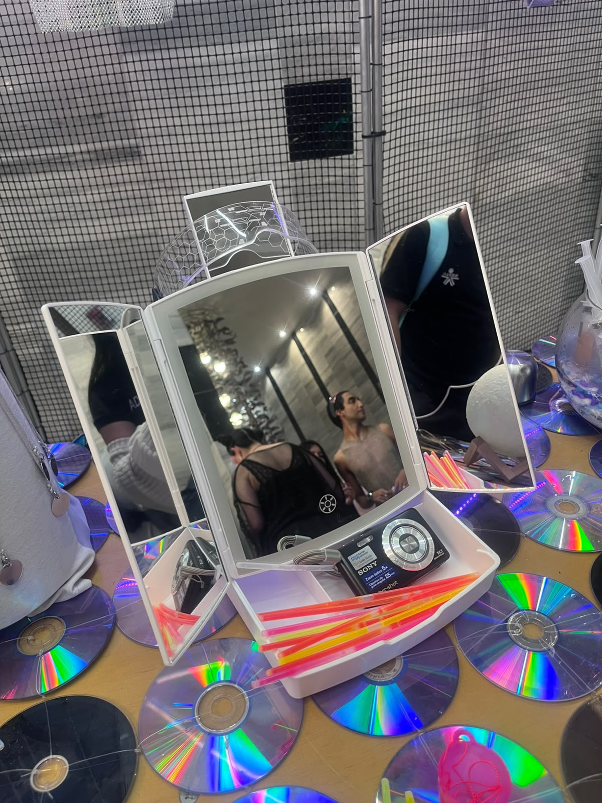
La foto fue tomada en el mismo stand de la primera foto y como se logra apreciar daba toda esta vibe de rave. También se me olvidaba mencionar que ellos tenían pequeños shots de licor y eso completó más la sensación de fiesta.
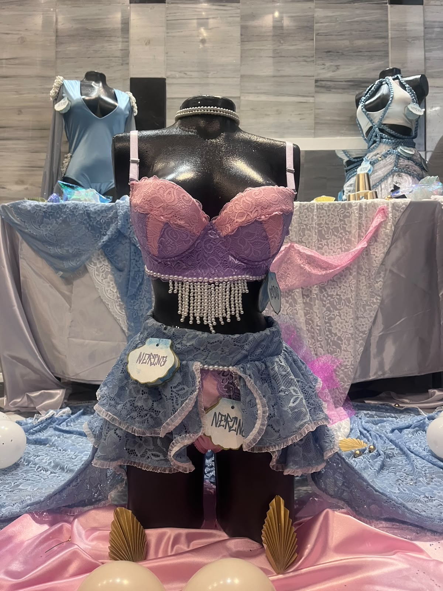
Ese stand fue uno de mis favoritos, me encantó cada prenda que vi.
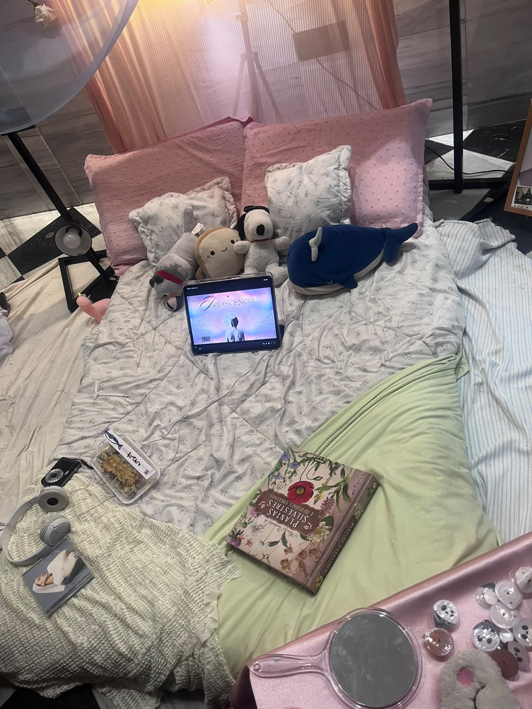
Esta foto fue mi foto favorita, me hizo sentir completamente en una vibe “Pinterest”, me encantó mucho también la tranquilidad y amabilidad que nos pudieron transmitir las dueñas del stand.
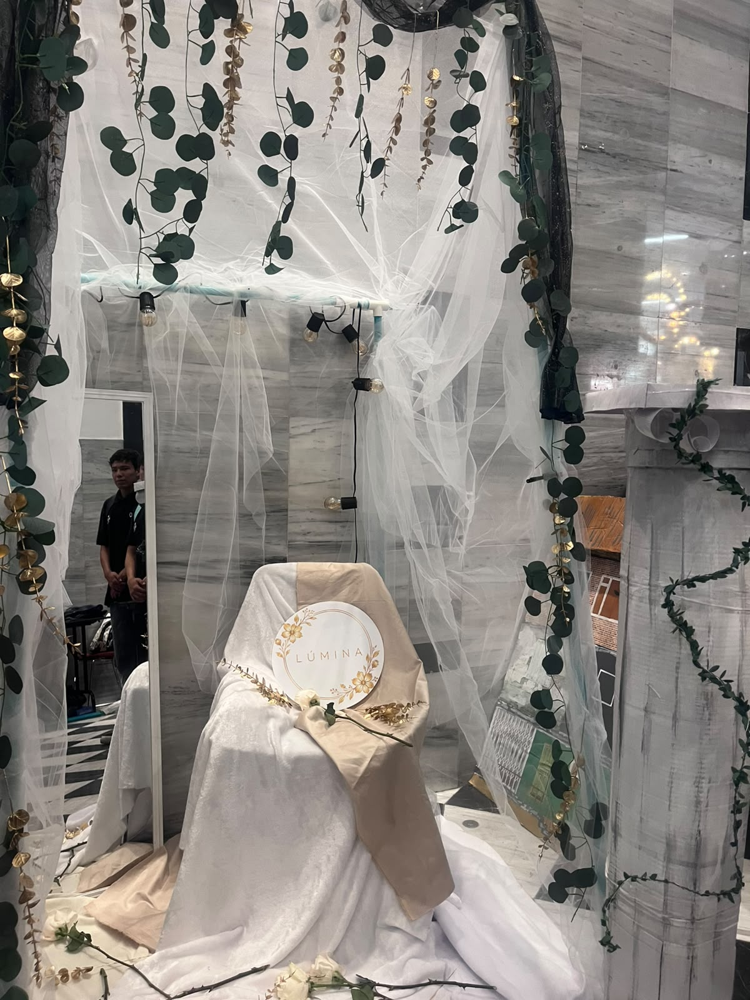
Este stand transmitió elegancia y minimalismo, este stand por lo que ví solo era de joyas, no alcancé ver prendas de él.